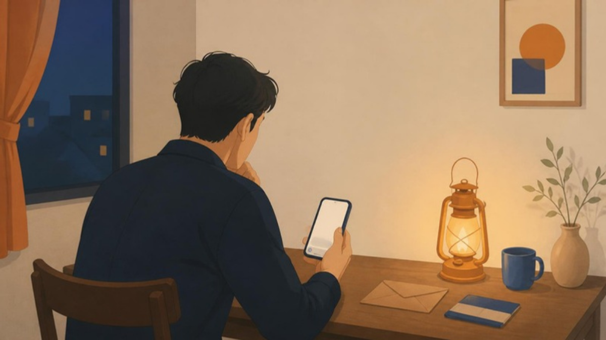
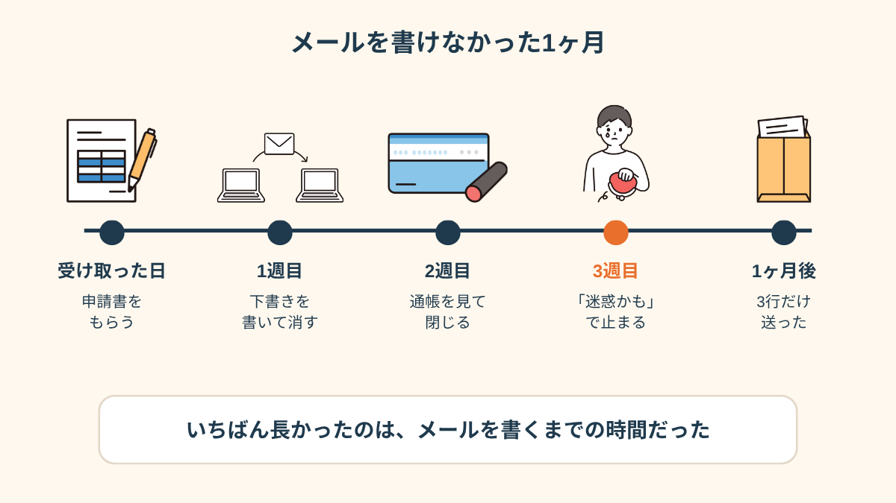
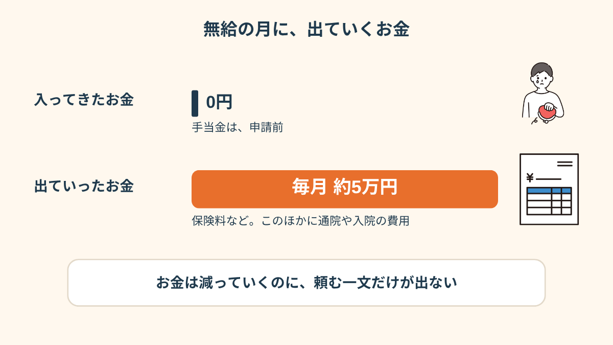
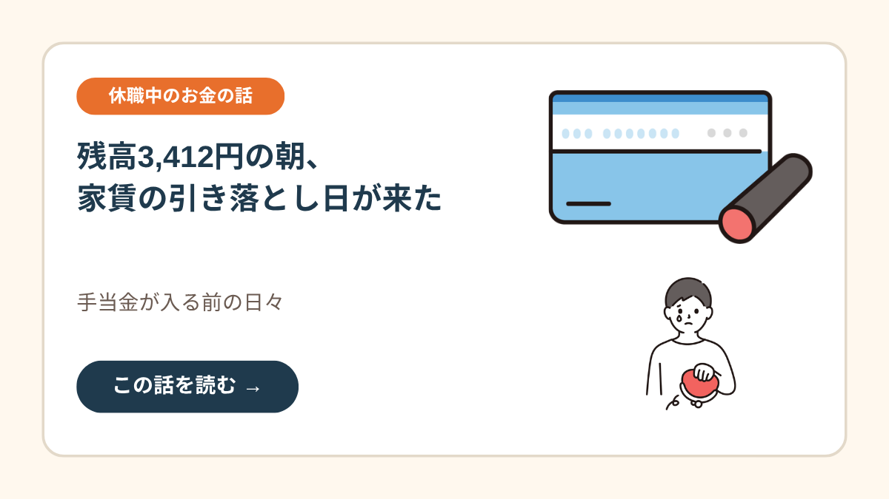
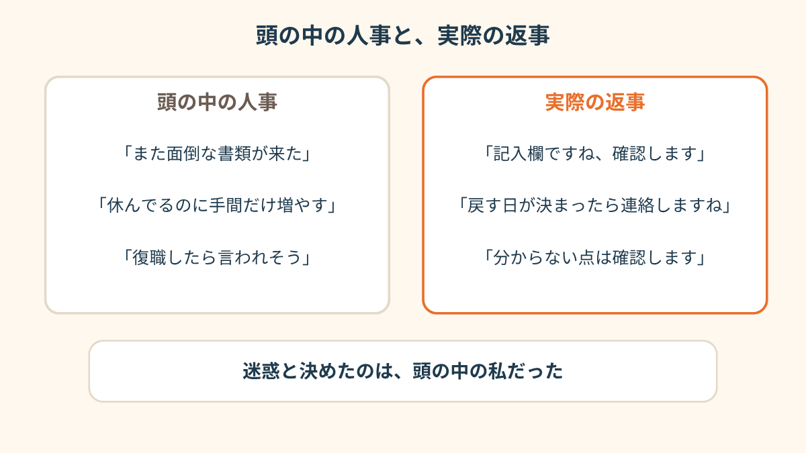
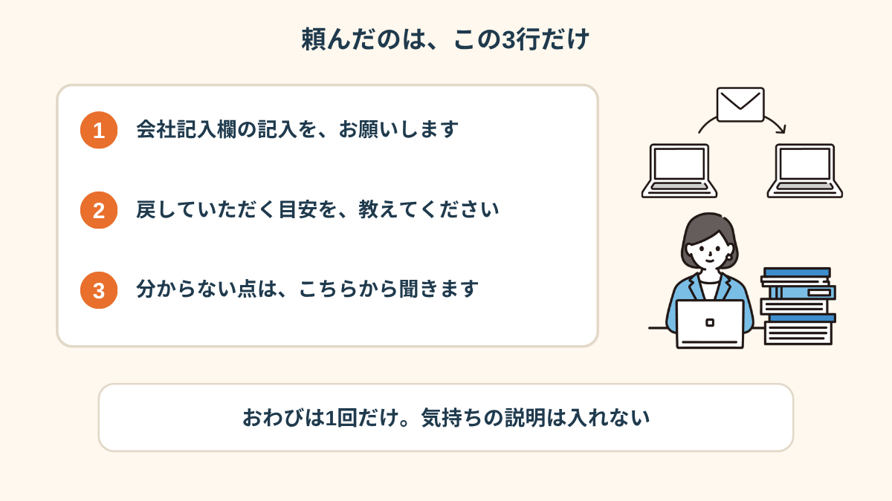
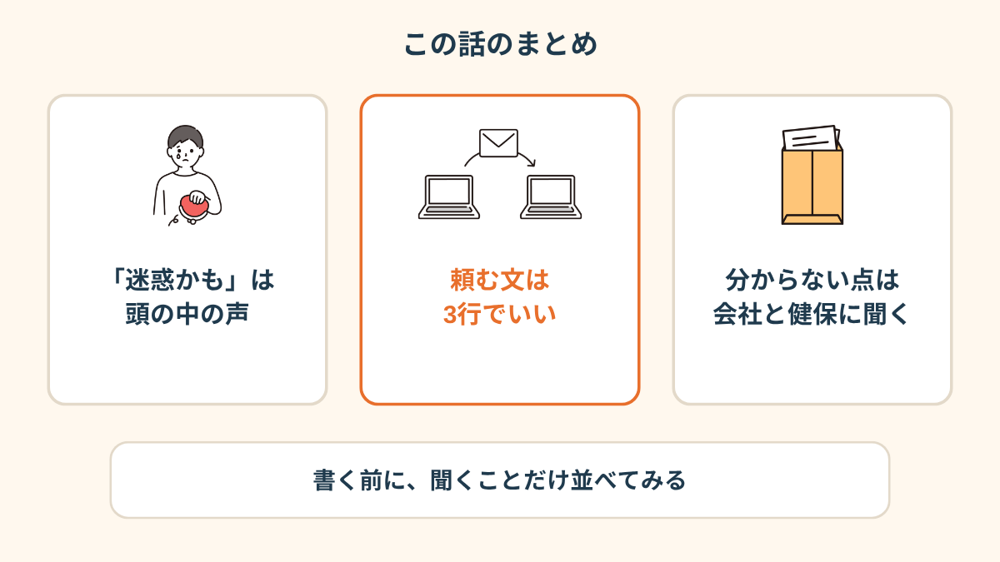

「会社記入欄の記入、お願いしてもいいですか」
この一文を、私はメールの下書きに入れたまま、1ヶ月寝かせました。
給料は、もう出ていない月です。
PR


下書きを、11回書き直した
主治医から傷病手当金の申請書をもらった日、帰りの電車で、もう人事宛ての下書きを開いていました。
申請書には「事業主記入欄」がある。ここだけは、会社に書いてもらうしかない。
つまり、人事に「お願いします」と言わないといけない。
1行目は「お忙しいところ申し訳ありません」。
消して、「お手数をおかけしますが」。
消して、また「申し訳ありません」。
休んでいるだけで迷惑をかけているのに、そのうえ書類の手間まで増やすのか、って。
送信ボタンの手前まで行っては、アプリを閉じる。
気づいたら11回、書き直していました。頼む前から、もう謝り続けている状態でした。

メールの最初が謝罪だらけになる人は、多いです。文面を整えれば整えるほど、送れなくなることもありますよ。まめざる

送信ボタンの手前で、また手が止まる夜

申請書をもらってから、送るまでを並べてみた
「うちの会社、人事が2人しかいなくて。その2人の顔が浮かぶんですよ。『また手間が』って思われる気がして、3週間くらい放置してました。バカみたいなんですけど」
30代・男性（うつ状態で休職・営業職）
通帳を見ては、閉じた
その間にも、お金は出ていきました。
無給なので、入ってくるものはゼロ。なのに、保険料などで毎月5万円ほど。通院の費用もあります。
貯金があるから、今日明日で困るわけじゃない。
だから余計に、「まだ大丈夫」って自分に言い聞かせていました。
でも通帳を開くたびに、数字は確実に減っている。

入ってこないのに、出ていくものは続く
i
ここに書いた5万円ほどは私の場合の目安で、保険料や支払いの時期は、加入している保険や住んでいる自治体、会社によって違います（2026年10月時点）。
「毎月ちゃんと引かれるのに、入ってくるのはゼロ。それなのに、書類1枚頼むのが怖いって、自分でも意味が分からなかったです」
20代・女性（適応障害で休職・事務職）
お金が実際に尽きかけた朝のことは、こっちに書いてあります。

手当金が入る前の日々を読む →
「権利だから」と言われても、指が動かなかった
主治医には、診察室で話しました。
「これは権利だから、遠慮しなくていいですよ。人事の仕事ですから」って、あっさり。
頭では、分かるんです。
でも、頭と指は別でした。
復職したときに「あのとき手間かけさせたよね」と言われる場面ばかり、勝手に再生される。
相談の一コマ

相談者
先生には「権利だよ」って言われたのに、メールが送れないんです。自分でも変だと思います。
まめざる
変じゃないですよ。権利だと分かっていても、頼む相手の顔が浮かぶと止まる人はいます。送れなかった間、頭の中の人事の人は、何て言っていましたか？
相談者
「また面倒な書類か」って。あと「休んでるのにね」って。
まめざる
それ、実際に誰かが言ったことは、ありますか？
i
自分が何に引っかかっているのか分からなくなったときは、
気持ちスキャン診断を覗いてみるのも手です。2問で、今の気持ちを整理できます。よかったらどうぞ。
送ってみたら、返事は拍子抜けするほど普通だった
結局、送ったのは1ヶ月後。
下書きを全部消して、3行だけにして、目をつぶって送信しました。
返事は、その日の夕方に来ました。
「記入欄ですね、確認します。戻す日が決まったら連絡しますね」
それだけ。
謝罪も、嫌味も、何もなし。
あの1ヶ月は何だったんだろうって、スマホを持ったまま、しばらく天井を見ていました。

頭の中の人事と、実際の返事を並べてみた
頼んだのは、この3行だけ
謝る言葉は、1回で足りた
書いたのは、本当に3行です。
1つ目はお願い。2つ目は「いつごろ戻してもらえるか」。3つ目は「分からない点はこちらから聞く」。
おわびは1回だけ入れて、気持ちの説明は全部やめました。

頼んだのは、この3行だけ
謝る言葉を増やすほど、読む側は「何を頼まれているのか」が分かりにくくなることがあります。お願い・目安・連絡先の3つが見えれば、まず足りますよ。まめざる
!
傷病手当金の申請書の書き方、会社記入欄の扱い、必要な書類や期限は、加入している健康保険（協会けんぽ・健保組合など）や会社によって違います。この記事は、実際にあった複数の話を組み合わせて書いたもので、結論を保証するものではありません。迷ったときは、人事・総務や加入先の健保に確認してください（2026年10月時点）。
Q. 傷病手当金の申請書の会社記入欄を頼むのは、会社の迷惑になりますか？
一般的には、会社の事務として対応するものと考えられていて、頼むこと自体を気にしすぎなくていいという声が多いようです。ただ、会社の規模や担当者の慣れによって、対応の早さは違うといわれています。不安なときは、加入している健康保険や人事に先に流れを確認してみてください（2026年10月時点の情報です）。
Q. 会社記入欄をお願いするメールには、何を書けばいいですか？
長い説明はなくても足りることが多いようです。「記入をお願いしたいこと」「戻していただく目安」「分からない点はこちらから確認すること」の3つが見えれば、相手は動きやすくなります。おわびの言葉は、1回で十分という人が多いようです。
Q. 会社がなかなか記入してくれないときは、どうすればいいですか？
まずは担当者に、進み具合をやわらかく聞いてみる人が多いようです。それでも進まないときや、会社に頼みにくい事情があるときは、加入している健康保険に相談してみてください。会社や保険によって扱いが違うため、断定はできません（2026年10月時点の情報です）。
Q. 無給の間、お金が不安で、申請を急ぎたいときは？
申請から支給までの期間や、必要な書類は、加入先によって変わります。急ぎたいときほど、先に加入先の健保へ「いつ頃までに何を出せばよいか」を聞いておくと、会社に頼む日も決めやすくなります。生活費が厳しい場合は、自治体の相談窓口に聞く方法もあります。

書く前に、聞くことだけ並べてみる
PR


まずは無料で相談してみる
会社への書類のお願いや、お金のことで手が止まったとき。うまく話せなくても大丈夫です。一緒に整理していきましょう。
無料相談はこちら
この記事に、聞いてみたいことはありますか？
「自分の場合はどうなんだろう」と思ったことを、気軽に書いてみてください。いただいた質問は個別にお返事したうえで、匿名で記事にすることがあります。
お
おのざる
mimemime代表。就労支援の現場経験をもとに、障がいのある方の働く不安に寄り添う記事を執筆。